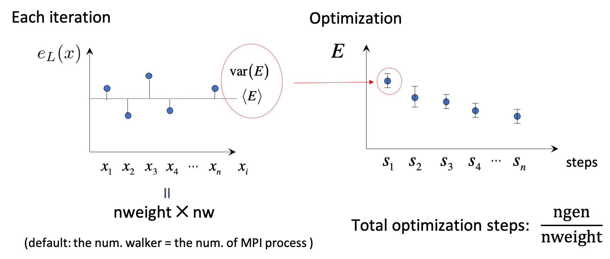

Quantum Monte Carlo calculations¶
We describe input files that control variational and diffusion Monte Carlo simulations. TurboRVB input files are built using fortran namelists. Keywords are divided in different sections according to their meaning.
Quantum Monte Carlo kernel (turborvb.x)¶
turborvb.x is a binary to run QMC jobs. The input parameters are explained as follows.
Simulation section¶
This section contains general informations necessary to specify the type of run to be carried out. In this section it is specified whether we want to perform a wave function optimization or production run and using which method (like Variational Monte Carlo (VMC) or Lattice Regularized DMC (LRDMC).
parameter |
datatype |
default |
description |
|---|---|---|---|
itestr4 |
int |
2 |
This keyword decides the optimization scheme and its kernel. It can assume an integer value according to the following scheme:
|
maxtime |
int |
86000 |
The program will stop after maxtime (sec.) |
iopt |
int |
1 |
This keyword controls the starting of the run. It can assume the following integer values:
|
ngen |
int |
100 |
The number of iterations of any chosen method. Represents the total number of samples for the local energy or energy derivatives. In case of optimization, it must be a multiple of nweight given in the &optimization section. |
nscra |
int |
2*nel + 2 |
Inside an MC step, the determinant is usually updated instead of being recalculated from scratch. To avoid error summation, it’s necessary to calculate it from scratch every nscra accepted moves. |
nbra |
int |
depending on itestr4 |
In VMC, it indicates the number of Metropolis steps before computing a new sample. In LRDMC, if > 0, it uses the new more efficient method with perfect load balancing. Should be large enough (#electrons) to guarantee an efficient branching (% independent walkers / # walkers between 80% and 95%). |
iseedr |
int |
236413883 |
Seed of the random number generator. |
nw |
int |
num. of MPI |
Number of walkers. If not specified, it coincides with the number of processors. Otherwise, it must be a multiple of their number. |
disk_io |
str |
default |
‘default’: default I/O, temporary files for each MPI process, ‘nocont’: minimal I/O no continuation, ‘mpiio’: temporary files are not generated for each MPI rank. They are gathered to single file. |
kSq |
real |
0.0 for molecule, 1.d-8 for crystals |
Precision for the Ewald summation. |
kappar |
real |
0.0 for molecule |
Coefficient in the Ewald summation. The default value depends on the crystal type (orthorombic, nonorthorohmbic). |
freqcheck |
int |
1000 |
Frequency for checking flag error. |
membig |
bool |
.true. |
Large memory is given or not. |
membigcpu |
bool |
.true. |
Large memory is given or not. |
developer |
int |
0 |
Unidentified (This will be removed in the future). |
yesfast |
int |
-1 |
Fast I/O (This will be moved to /developer/ namelist). |
nproc_diag |
int |
0 |
The number of intra MPI communicators. 0 means no intra communicator (this will be removed in the future). |
ip_reshuff |
int |
-1 |
Unidentified (This will be moved to /developer/ namelist). |
min_block |
int |
100 |
The minimum block size for computational efficiency at expense of memory, used for SCALAPACK. A smaller value will require less memory. (This will be removed in the future). |
max_target |
int |
200000 for GPU, 0 for CPU |
Unidentified (This will be moved to /developer/ namelist). |
max_targetsr |
int |
200000 for GPU, 0 for CPU |
Unidentified (This will be moved to /developer/ namelist). |
dielectric_ratio |
real |
1.0 |
Parameter for dielectric constant: see dielectric.f90 (not tested). |
dielectric_length |
real |
1.0 |
Parameter for dielectric constant: see dielectric.f90 (not tested). |
case_diel |
int |
0 |
Flag for dielectric constant: see dielectric.f90 (not tested). |
neigh |
int |
1 |
Neighbors in the Ewald summation (but not used?) unidentified. |
novec_loop1 |
bool |
.true. |
Vectorize of subroutine upnewwf (This will be moved to /developer/ namelist). |
yes_sparse |
bool |
.false. |
Unidentified (This will be moved to /developer/ namelist). |
yes_sparse_choose |
bool |
.false. for DFT, .true. for QMC |
Unidentified (This will be moved to /developer/ namelist). |
max_sparse_choice |
int |
20 for CPU, 100 for GPU |
Unidentified (This will be moved to /developer/ namelist). |
Pseudo section¶
Parameter |
Datatype |
Default |
Description |
|---|---|---|---|
nintpsa |
int |
6, 12, 18, 50 |
Number of integer points for pseudopotential, if present. |
npsamax |
int |
2 |
Multiplication factor for the number of pseudo integration points. Note that, you should use npsmax > 2 if the code terminates with the error ‘Increase npsamax’. |
pseudorandom |
bool |
.false. for DFT, .true. for QMC |
Use a random integration mesh for pseudo with the algorithm for QMC by R. Fahy. |
VMC section¶
This section should be specified for a VMC or VMCopt run.
Parameter Name |
Datatype |
Default |
Description |
|---|---|---|---|
tstep |
real |
2.0 |
Time step for VMC moves. Adapted automatically. |
hopfraction |
real |
0.0 |
The hopping ratio used in the MCMC. See. subroutine hopping in detail. |
epscut |
real |
1.0d-5 |
The threshold of regularization. epscut = 0 to be used only in the optimization of the Jastrow, when no regularization is necessary for finite variance energy derivatives. If epscut > 0, a regularization is applied (epscuttype=2) and finite variance forces and energy derivatives can be computed. It is tuned automatically starting from the value in input. |
epstlrat |
real |
sqrt(epsmach), where epsmach = dlamch(‘e’) |
epstl = epstlrat*epscut. epstl is a precision control parameter used in subroutine ratio_psi() (if zero not used) dlamch(‘e’) is a lapack routine that returns the relative machine precision |
epscuttype |
int |
0 or 2 |
Accept default (0,2) determined by epscut. The type of regularization applied to the determinant. Type 0: no regularization. Type 2: best one. (Other options are possible but deprecated). |
alat2v |
real |
0.0 |
not used. This will be removed in the future |
shift |
real |
0.0 |
unidentified |
change_epscut |
bool |
.true. for VMC, otherwise .false. |
automatic adjustment of epscut |
change_tstep |
bool |
.true. for VMC, otherwise .false. |
automatic adjustment of tstep |
epsvar |
real |
1.0d-4 |
epsvar is a precision control parameter used in subroutine ratiovar.f90 (if zero not used) |
theta_reg |
real |
0.375 |
ratiodet = 1.d0/ratiodet**theta_reg used in subroutine ratiovar.f90. Eq.(121) in the paper [J. Chem. Phys. 152, 204121 (2020)]. |
DMCLRDMC section¶
This section should be specified for a LRDMC or LRDMCopt run.
Parameter name |
Datatype |
Default |
Description |
|---|---|---|---|
etry |
real |
0.0 |
Trial total energy. Please put the DFT or VMC energy. |
typereg |
int |
6 |
How to deal with the spin-flip term, 0: Standard (Det. + Jas.), 6: only Det. |
npow |
int |
0 |
The parameter npow gradually sets the degree of localization used in the effective Hamiltonian. npow = 0 corresponds to a Fixed Node Hamiltonian whereas npow = 1 corresponds to the local approximation. Accept default. |
tbra |
real |
0.1 |
DMC time between consecutive branchings. Do not define when nbra > 0 in the simulation section. |
gamma |
real |
0.0 |
The γ parameter in LRDMC. Accept default. |
plat |
real |
0.0 |
a function p(r) dividing the dense and coarse regions. Default value is 0.0 for the single-grid LRDMC (i.e., alat2=0.0), automatically adjusted for the double-grid LRDMC (i.e., alat2=finite value) |
alat2 |
real |
0.0 |
Double-grid Lattice space. alat2 = a’/a, where a is the smallest regularization grid and a’ is the larger one used in the valence region (i.e., far from nuclei). When you put a negative value for alat, you should not specify alat2 (i.e., please comment it out). The default value of alat2 is determined by Nakano’s algorithm. |
alat |
real |
1.0/Z_max |
Z_max is the largest effective nuclear charge in the system. Lattice space a of the smallest regularization grid. Accept default. If you want to do a single-grid LRDMC calculation, please put a negative value to satisfy the detailed-balance. If you want to do a double-grid LRDMC, please put a positive value and switch on iesrandoma. |
tstepfn |
real |
0.0 |
0.0 -> Fixed-node, 1.0 -> LRDMC becomes a VMC calc. |
Klrdmc |
real |
0.0 |
η parameter of LRDMC. η = 1 + Ka^2 |
optbra |
int |
0 |
unclear |
parcutg |
real |
1 |
Use parcutg=1. parcutg=0 for standard LRDMC with no cutoff (energy unbounded), but it now works. |
novar |
int |
0 |
unclear, used for evaluating local energies in the subroutines updiag/updiag_complex compute the local energy both diagonal and off-diagonal part. Regularization of the Coulomb potential is also computed. |
epscutdmc |
real |
0.0 |
regularization used in a DMC calculation. the detail is under investigation. |
epstldmc |
real |
0.0 |
psidetln(j) is smaller than epstldmc, then kill the walker. |
rejweight |
bool |
.true. |
rejecting or rescaling the weights according to the acceptance/rejection step) in standard dmc or non local dmc with heat bath after all electron diffusion rejecting or rescaling the weights according to acceptance should be the best choice. In non local dmc with heat bath after single particle diffusion the best choice is not to reject the weights. |
cutreg |
float |
automatically chosen |
DMC cutoff on local energy (Ry). |
better_dmc |
bool |
.true. |
unclear |
yesalfe |
bool |
.false. |
unclear |
safelrdmc |
bool |
.false. |
unclear |
changelambda |
bool |
.false. |
unclear |
noblocking |
bool |
.false. |
unclear |
add_diff |
bool |
.true. |
unclear |
lrdmc_der |
bool |
.false. |
unclear |
lrdmc_nonodes |
bool |
.false. |
unclear |
enforce_detailb |
bool |
.false. |
enforcing the detailed-balance |
iesrandoma |
bool |
.true. |
flag to randomize the direction of the electron’s diffusion. |
zmin |
real |
0.0 |
the minimum effective Z for which the double-grid LRDMC is applied. |
yes_fastbranch |
bool |
.false. |
unclear |
l0_kousuke |
real |
2.0 |
a parameter for the double-grid LRDMC. See “l” in the Eq.6 of the paper (Phys. Rev. B 101, 155106 (2020)). |
nw_max |
int |
-1 |
max number of. walker |
true_wagner |
int |
-1 for VMC, 2 for DMC |
if true_wagner=2, the regularization developed by S. Pathak and L.K. Wagner [AIP Advances 10, 085213 (2020)] |
cutweight |
real |
depends on calc. type |
regularization parameter in eq.4 of S. Pathak and L.K. Wagner [AIP Advances 10, 085213 (2020)] |
nbra_cyrus |
int |
0 |
A parameter to compute forces using the practical scheme developed by S. Moroni et al. (originally devised by Cyrus Umrigar), corresponding n in Eqs. 12 and 13 of the paper [J. Chem. Theory Comput. 2014, 10, 11, 4823–4829] |
weight_moroni |
real |
1.0 |
unclear |
Readio section¶
Parameter |
Datatype |
Default |
Description |
|---|---|---|---|
iread |
int |
0 |
For correlated sampling or measuring correlation functions with readforward, use iread=3. |
Optimization section¶
This section should be specified for a VMCopt or LRDMCopt run.
{kind=link}
Parameter |
Datatype |
Default |
Description |
|---|---|---|---|
kl |
int |
-7 |
Method used for the solution of the linear equation Sx = f, where f are energy derivatives and x parameters change in the stochastic reconfiguration. kl=-7 is mandatory for signalnoise=.true. optimization method. It is faster for large number of parameters and small number of sampling per processor. kl=-6 may be useful for small systems/computers when the number of sampling per processor is very large. |
ncg |
int |
1 |
If ncg > 1, a conjugate gradient approach is used with ncg gradients (generated on fly during the run) to accelerate convergence. ncg > 1 can be used only with the linear method (itestr4 = -4, -8). |
parcutmin |
real |
0.0 |
If ncg > 1 is used in the minimization only the gradients that have a signal/noise ratio larger than parcutmin. If ncg = 0, the standard linear method with all parameters included in the optimization is used. |
npbra |
int |
0 |
If npbra > 0 in the linear method, npbra parameters with the largest signal to noise ratio are also included. |
parcutpar |
real |
0.0 |
If npbra > 0, among the npbra selected, only the parameters with signal/noise ratio > parcutpar are optimized. |
tpar |
Real |
0.35 |
Optimization step; in the case of the linear method (itestr4 = -4, -8) reduces the step from its ideal value (tpar = 1) that is unfortunately unstable for large number of variational parameters or small statistics. In the simpler SR method tpar has to be set by hand as in the standard steepest descent method. |
parr |
real |
0.0 |
Determines the accuracy in the calculation of the inverse of the SR matrix. The smaller the value, the more accurate (and fast) is the optimization, but the stability of the method gets worse. It should be decreased systematically up to at least 0.001 for fairly accurate wavefunction optimizations. |
nweight |
int |
1 |
Number of sampling used for each iteration of the optimization steps. |
nbinr |
int |
1 |
Number of bins used in the optimization step of length nweight-iboot. This binning is used to estimate error bars during the simulation. |
iboot |
int |
0 |
Number of step before making averages in the bin of length nweight. nweight-iboot has to be a multiple of nbinr. |
epsi |
real |
10000.0 |
Cutoff for reducing too large changes of WF such that Δpsi/|psi| > epsi. |
minzj/maxzj |
real |
automatic |
Minimum/Maximum Jastrow orbital exponent Z allowed. |
minz/maxz |
real |
automatic |
Minimum/Maximum AGP orbital exponent Z allowed. |
molopt |
int |
0 |
If molopt = -1 optimization with fixed number of molecular orbitals is performed (nmolmax in the &molecul section should be defined in this case). If not specified, the standard optimization is employed. |
yesquantum |
bool |
.false. |
If yesquantum=.true. quantum effects are included. No kaverage is possible for the time being. |
nbead |
int |
-1 |
When yesquantum is true, one has to specify the number of beads of the corresponding path integral. The larger this number, the more accurate the Trotter approximation is (error vanishing as 1/nbead^2). |
idyn |
int |
0 |
To choose the type of ion dynamics. The available options are:
|
tion |
real |
tpar |
When dynamics is on (idyn > 0) it represents the time-step of the molecular dynamics. With idyn=5, has the scale of an energy and should be set small enough inversely proportional to the number of samples used to evaluate the covariance matrix. |
signalnoise |
bool |
.false. |
If signalnoise=.true., one optimizes all the parameters (including atomic positions with ieskin ≠ 0) by following the direction of maximum signal to noise ratio. parr is also effective in this case to regularize the inversion. |
nmore_force |
int |
1 |
If dynamics is employed, the number of samples used during the last step of optimization is increased by a factor (nmore_force+1). |
onebodysz |
bool |
.false. |
If .true., optimize only the one body part of the spin Jastrow factor. |
symmetrizeagp |
bool |
.true. |
If .true. (default), symmetrize the agp at each iteration step, as it can deteriorate due to numerical accuracy. |
Parameters section¶
This section should be specified for a VMCopt or LRDMCopt run.
Only ieskin should be specified for a VMC or LRDMC run if one wants to compute atomic forces.
This section describes switches for optimizing wavefunction parameters, the ouput printout and on the measures performed during the MC run. For example, value=0 means do not optimize this type, vice versa (iesd=0 means that one body and two body Jastrow factors will not be optimized).
parameter name |
datatype |
default |
description |
|---|---|---|---|
|
int |
0 |
Integer (0 or 1). It acts as a switch for the 1-body and 2-body Jastrow. |
|
int |
0 |
Integer (-1, 0 or 1). If \neq 0, the spin Jastrow factor matrix is optimized, if allowed in the input fort.10. If < 0, a range can be defined in the &fitpar section with rmaxinv. |
|
int |
0 |
Integer (-1, 0 or 1). If \neq 0, the density Jastrow factor matrix is optimized. If < 0, a range can be defined in the &fitpar section with rmaxj. |
|
int |
0 |
Integer (-1, 0 or 1). If \neq 0, the AGP matrix on the localized basis is optimized. If < 0, a range can be defined in the &fitpar section with rmax. |
|
int |
0 |
Integer (0 or 1). If \neq 0, the exponent and/or the contracted coefficient of the basis defining the Jastrow are optimized. When itestr4 = -4,-9, only contracted coefficients are optimized if the basis contains them, otherwise yeszj=.true. is switched on and exponents are optimized. |
|
int |
0 |
Integer (0 or 1). Same as the above, but for the determinantal part. yeszagp=.true. replaces yeszj in this case. |
|
int |
0 |
Integer (0 or 1). It specifies which part of the energy is printed out. If ieser = 1, it measures the total energy (no optimization assumed). |
|
int |
0 |
Integer (0 or 1). If iesfix = 1, the variance of the energy is printed out (no optimization assumed). |
|
int |
0 |
Integer (0 or 1). If nuclear forces have to be computed (especially with dynamics idyn > 0), set ieskin > 0. |
|
int |
.false. |
Logical value. If yeszj=.true., exponents of the Jastrow basis are optimized if iesm \neq 0 even if itestr4 = -4, -9. |
|
int |
.false. |
Logical value. Same as above, but for the determinantal part. |
|
int |
.false. |
Logical value. For complex wf, if real_agp=.true. and iessw=\neq 0, only the real part of the complex agp matrix is optimized. The imaginary part is assumed and set to zero. |
|
int |
.false. |
Logical value. For complex wf, if real_contracted=.true., only the real part of the contracted coefficient of the basis is optimized. |
|
int |
.false. |
Integer value. typedyncell=0 means Standard NVT ensemble with no optimization of cell. typedyncell=1 implies fixed volume, but optimization of b/a and c/a at fixed volume V = a \times b \times c. typedyncell=2 stands for constant pressure, variable volume, optimizing a, b and c at pressfixed = constant. typedyncell=3 represents constant pressure and variable volume but without modifying b/a and c/a. |
|
int |
0 |
Value of the pressure in a.u., for dynamics at fixed pressure. Note: the classical value is not included. |
|
bool |
.false. |
Logical value. If fixa = .true., a is kept fixed during dynamics. |
|
bool |
.false. |
Logical value. If fixb = .true., b is kept fixed during dynamics. |
|
bool |
.false. |
Logical value. If fixc = .true., c is kept fixed during dynamics. |
Fitpar section¶
This section describes the details of the locality approximations for reducing the number of parameters.
parameter name |
datatype |
default |
description |
|---|---|---|---|
|
real |
0.0 |
Real value. If iessw < 0, then all matrix elements of the AGP at distance larger than rmax are not optimized. rmax = 0 implies that no matrix elements connecting different atoms are optimized. |
|
real |
0.0 |
Real value. If iefree < 0, then all matrix elements of the Jastrow at distance larger than rmaxj are not optimized. rmaxj = 0 has the same meaning as above, implying that only the so-called 3-body Jastrow is optimized. |
|
real |
0.0 |
Real value. If iesinv < 0, then all matrix elements of the spin Jastrow at distance larger than rmaxinv are not optimized. The rule is the same as the ones above for the spin Jastrow. |
Dynamics section¶
This section contains details about ion dynamics.
parameter name |
datatype |
default |
description |
|---|---|---|---|
|
real |
0.0 |
Real value. The temperature in a.u. If temp < 0, then abs(temp) indicates the temperature in Kelvin. temp = 0 can be used for structural optimization. If the temperature is set to 0 K, it is purely structural optimization. |
|
real |
0.0 |
Real value. It is necessary to keep it non-zero in Newtonian dynamics (idyn=4,7,8) but can be set to zero (recommended) for idyn=5 (the recommended dynamics). |
|
int |
0 |
Integer value. After iskipdyn times nweight MC steps, check if dev_mat < maxdev_dyn. |
|
real |
0.0 |
Real value. After each WF optimization, it is the maximum value of dev max accepted for an ion move. Deprecated. |
|
real |
0.0 |
Real value. Used with idyn = 5, it is a parameter that can help with convergence in the small time step limit (tion \to 0). It should be set in such a way that the Hessian matrix during the dynamics is well approximated by delta0 \times Covariance matrix. For other dynamics, it represents a multiplicative factor applied to the covariance matrix used to decrease the correlation times. In these cases, delta0 has to be larger than a critical value depending on the time step. However, this is chosen by default. |
|
bool |
.false. |
Logical value. With idyn = 5 it has to be set to .true. in order to eliminate the bias in describing the canonical ensemble for tion \to 0. |
|
real |
0.0 |
Real value. If non-zero and equal to one, it applies the noise correction to reduce the bias implied by the statistical evaluation of forces. In theory it should work, but in practice, it has little effects. So it is recommended to set to zero. |
How to get energy and forces after a VMC or LRDMC run (forcevmc.sh, forcefn.sh)¶
After a VMC calculation has finished, you can get the total energy (i.e., summation of the local energy), i.e.,
E_{tot}=\int d {\bf{x}} \pi({\bf{x}}) e_L ({\bf{x}}) \sim \cfrac{1}{M} \sum_{i=1}^{M}e_L(x_i)
by forcevmc.sh script:
forcevmc.sh 10 5 1
wherein 10, 5, and 1 are bin length, the number of the discarded bins (i.e., the number of warm-up steps 4), and the ratio of Pulay force (1 is ok), respectively. A reblocked total energy and its variance is written in pip0.d.
#cat pip0.d
number of bins read = 1496
Energy = -1.1379192772188327 1.7589095174214898E-004
Variance square = 1.7369139136828382E-003 2.7618833870090571E-005
Est. energy error bar = 1.7510470092362484E-004 3.9800256121536918E-006
Est. corr. time = 2.6420266523220208 0.10738159557488412
If you want to calculate forces, put ieskin=1 in the ¶meters section.
you may get forcevmc.dat file.
#cat forces_vmc.dat
Force component 1
Force = 6.004763869201490E-003 4.997922374161991E-005
6.273565633363322E-007
Der Eloc = 6.927675852724724E-003 4.999242839793062E-005
<OH> = 0.557134685159244 7.437283601136703E-005
<O><H> = -0.557596141151006 7.447559481785158E-005
2*(<OH> - <O><H>) = -9.229119835232336E-004 2.922997214772288E-006
Force component 2
Force = -6.004763869201487E-003 4.997922374182328E-005
6.273565633389692E-007
Der Eloc = -6.927675852724721E-003 4.999242839840503E-005
<OH> = -0.557134685159244 7.437283601136703E-005
<O><H> = 0.557596141151006 7.447559481785158E-005
2*(<OH> - <O><H>) = 9.229119835232336E-004 2.922997214772288E-006
Force component 3
Force = 1.200952773851219E-002 9.995844747822329E-005
1.254713126751116E-006
Der Eloc = 1.385535170544853E-002 9.998485679843661E-005
<OH> = 1.11426937031852 1.487456727691242E-004
<O><H> = -1.11519228230199 1.489511903810635E-004
2*(<OH> - <O><H>) = -1.845823966936333E-003 5.845994429761913E-006
where Force are total forces, Der Eloc are Hellman-Feyman contributions, and 2*(<OH> - <O><H>) are Pulay contributions. In detail,
F_{\alpha} = - \braket{\cfrac{d}{d{\bf R}_{\alpha}}E_L} - 2 \left(\braket{E_L \cdot \cfrac{d}{d{\bf R}_{\alpha}} \log (J^{1/2} \Psi)} - \braket{E_L} \cdot \braket{\cfrac{d}{d{\bf R}_{\alpha}} \log (J^{1/2} \Psi)}\right),
where J is the Jacobian of the warp transformation if it is employed:
\bar{\bm {r}_i} = \bm{r}_i + \Delta \bm{R}_{a}\omega_{a} \left({\bm{r}_i} \right), {\rm{where}} ,\,\ \omega_{a} = \cfrac{F \left( |\bm{r}-\bm{R_{a}}| \right)}{\sum_{M}^{b=1} F \left( |\bm{r}-\bm{R_{b}}| \right)}.
Indeed,
Der Eloccorresponds to - \braket{\cfrac{d}{d{\bf R}_{\alpha}}E_L}, and
2*(<OH> - <O><H>)corresponds to 2 \left(\braket{E_L} \cdot \braket{\cfrac{d}{d{\bf R}_{\alpha}} \log (J^{1/2} \Psi)} \braket{E_L \cdot \cfrac{d}{d{\bf R}_{\alpha}} \log (J^{1/2} \Psi)} \right).
Note that the obtained force is the sum of force components when you specify the symmetry, i.e.,
Force = F_{1,x} + F_{2,z} for:
# Constraints for forces: ion - coordinate
2 1 1 2 3
By the way, local energies, it derivatives, … etc are saved in fort.12.
This is a binary file. So, if you want to see it, please use the following python code:
from scipy.io import FortranFile
import numpy as np
# check length of fort.12
f = FortranFile('fort.12', 'r')
a = f.read_reals(dtype='float64')
column_length = len(a)
f.close()
# start reading fort.12
head = ("head", "<i")
tail = ("tail", "<i")
dt = np.dtype([head, ("a", "<{}d".format(column_length)), tail])
fd = open('fort.12', "r")
fort12 = np.fromfile(fd, dtype=dt, count=-1)
data_length=len(fort12)
fd.close()
# end reading fort.12
print(fort12)
# for ngen=10
>>> fort12
array([(40, [ 1. , 1. , -11.23924971, -11.23924971, 126.32073395], 40),
(40, [ 1. , 1. , -11.4465321 , -11.4465321 , 131.02309712], 40),
(40, [ 1. , 1. , -11.25058355, -11.25058355, 126.57563015], 40),
(40, [ 1. , 1. , -11.88021352, -11.88021352, 141.13947319], 40),
(40, [ 1. , 1. , -10.89686295, -10.89686295, 118.74162225], 40),
(40, [ 1. , 1. , -11.8906161 , -11.8906161 , 141.38675112], 40),
(40, [ 1. , 1. , -10.50040878, -10.50040878, 110.25858451], 40),
(40, [ 1. , 1. , -10.85804034, -10.85804034, 117.89704005], 40),
(40, [ 1. , 1. , -11.3042634 , -11.3042634 , 127.78637111], 40),
(40, [ 1. , 1. , -10.86745849, -10.86745849, 118.10165397], 40)],
dtype=[('head', '<i4'), ('a', '<f8', (5,)), ('tail', '<i4')])
# for ngen=10, ieskin=1 (force)
>>> print(fort12)
[(64, [ 1.00000000e+00, 1.00000000e+00, -1.11415166e+01, -1.11415166e+01, -6.76788096e-02, -3.24756797e-01, 7.54044578e-01, 1.24133391e+02], 64)
(64, [ 1.00000000e+00, 1.00000000e+00, -1.03517873e+01, -1.03517873e+01, -6.11591170e-01, -1.58829951e-01, 6.33106171e+00, 1.07159501e+02], 64)
(64, [ 1.00000000e+00, 1.00000000e+00, -1.10816574e+01, -1.10816574e+01, -9.54555883e-02, -1.03302282e-01, 1.05780612e+00, 1.22803130e+02], 64)
(64, [ 1.00000000e+00, 1.00000000e+00, -1.10699873e+01, -1.10699873e+01, -4.56617640e-01, -5.06874793e-02, 5.05475147e+00, 1.22544618e+02], 64)
(64, [ 1.00000000e+00, 1.00000000e+00, -1.11472251e+01, -1.11472251e+01, -2.66696199e-01, -6.23362748e-02, 2.97292255e+00, 1.24260627e+02], 64)
(64, [ 1.00000000e+00, 1.00000000e+00, -1.12157075e+01, -1.12157075e+01, 1.11745432e-01, -4.24133841e-02, -1.25330408e+00, 1.25792096e+02], 64)
(64, [ 1.00000000e+00, 1.00000000e+00, -1.21590572e+01, -1.21590572e+01, 7.54759031e-02, -1.60694240e-01, -9.17715821e-01, 1.47842672e+02], 64)
(64, [ 1.00000000e+00, 1.00000000e+00, -1.06346744e+01, -1.06346744e+01, 1.97122176e-03, -8.72304548e-01, -2.09633016e-02, 1.13096300e+02], 64)
(64, [ 1.00000000e+00, 1.00000000e+00, -1.09934275e+01, -1.09934275e+01, 4.44874974e-01, 5.13646778e-01, -4.89070079e+00, 1.20855449e+02], 64)
(64, [ 1.00000000e+00, 1.00000000e+00, -1.10323163e+01, -1.10323163e+01, -8.96736584e-02, 3.65895834e-02, 9.89308167e-01, 1.21712004e+02], 64)]
It is a similar procedure in a LRDMC calculation. After a LRDMC calculation has finished, you can get the total energy by forcefn.sh script:
forcefn.sh 10 3 5 1
wherein 10, 3, 5, and 1 are bin length, correcting factor (i.e., p in the above expression), the number of the discarded bins (i.e., the number of warm-up steps is 4), and the ratio of Pulay force (1 is ok), respectively. A reblocked total energy and its variance is written in pip0_fn.d.
% cat pip0_fn.d
number of bins read = 1201
Energy = -11.0854289356563 1.239503202184784E-004
Variance square = 0.126708380716482 1.148750765092961E-003
Est. energy error bar = 1.234807072779590E-004 2.503947626011507E-006
Est. corr. time = 1.85075908836029 7.596952532743223E-002
Energy (ave) = -11.0854159959592 1.144905833254917E-004
In detail, local energies, it derivatives, … etc are saved in fort.12.
This is a binary file. So, if you want to see it, please use the following python code:
from scipy.io import FortranFile
import numpy as np
# check length of fort.12
f = FortranFile('fort.12', 'r')
a = f.read_reals(dtype='float64')
column_length = len(a)
f.close()
# start reading fort.12
head = ("head", "<i")
tail = ("tail", "<i")
dt = np.dtype([head, ("a", "<{}d".format(column_length)), tail])
fd = open('fort.12', "r")
fort12 = np.fromfile(fd, dtype=dt, count=-1)
data_length=len(fort12)
fd.close()
# end reading fort.12
print(fort12)
# for ngen=10
[(88, [ 9.86170773e-01, 4.99135464e-02, 9.86170773e-01, -1.10385005e+01, -1.10168388e+01, 1.15291960e+01, 8.81420567e-01, 6.98486471e-01, 2.36894962e+01, 2.43879827e+01, 1.21370738e+02], 88)
(88, [ 9.98338830e-01, 4.99721051e-02, 9.98338830e-01, -1.10927678e+01, -1.09222941e+01, 1.19273579e+01, 8.78528014e-01, 3.38981825e+00, 2.41699956e+01, 2.75598139e+01, 1.19296508e+02], 88)
(88, [ 1.00471589e+00, 4.99333686e-02, 1.00471589e+00, -1.10613899e+01, -1.12830842e+01, 1.13634444e+01, 8.85749131e-01, 1.00489789e+00, 1.45340719e+01, 1.55389698e+01, 1.27307988e+02], 88)
(88, [ 1.01299329e+00, 5.05361181e-02, 1.01299329e+00, -1.11285545e+01, -1.09451392e+01, 7.04597311e+00, 9.31592950e-01, 7.90368785e-01, 1.20981738e+01, 1.28885425e+01, 1.19796072e+02], 88)
(88, [ 1.00768515e+00, 5.01575002e-02, 1.00768515e+00, -1.10766102e+01, -1.10519487e+01, 6.23060416e+00, 9.38800823e-01, 3.91804603e-01, 1.15920122e+01, 1.19838168e+01, 1.22145570e+02], 88)
(88, [ 1.00453664e+00, 5.01341628e-02, 1.00453664e+00, -1.10452450e+01, -1.11455370e+01, 6.20564485e+00, 9.37336722e-01, 1.41905072e-01, 1.17873053e+01, 1.19292104e+01, 1.24222994e+02], 88)
(88, [ 1.00089023e+00, 5.01634269e-02, 1.00089023e+00, -1.10088733e+01, -1.08850832e+01, 7.46071511e+00, 9.24659908e-01, 8.62370954e-01, 1.72063107e+01, 1.80686817e+01, 1.18485037e+02], 88)
(88, [ 9.75216423e-01, 4.94485892e-02, 9.75216423e-01, -1.07494006e+01, -1.07035718e+01, 1.08297761e+01, 8.93990117e-01, 1.53318195e+00, 2.25737265e+01, 2.41069084e+01, 1.14566449e+02], 88)
(88, [ 1.00020845e+00, 5.00654152e-02, 1.00020845e+00, -1.10020818e+01, -1.09391772e+01, 9.92690439e+00, 8.99350239e-01, 2.44630615e-01, 1.76602181e+01, 1.79048487e+01, 1.19665598e+02], 88)
(88, [ 9.98680471e-01, 4.99068560e-02, 9.98680471e-01, -1.09867801e+01, -1.11478923e+01, 1.14530815e+01, 9.02006051e-01, 5.49970529e+00, 1.87028590e+01, 2.42025643e+01, 1.24275504e+02], 88)]
When you do LRDMC calculations with several a, extrapolation a \rightarrow 0 by funvsa.x
# See. Readme of funvsa.x in detail.
# 2=(up to a^4) number of data 4 1
2 5 4 1
0.10 -11.0850188375511 1.250592379643920E-004
0.20 -11.0854289356563 1.239503202184784E-004
0.30 -11.0855955871707 1.334024389855123E-004
0.40 -11.0860656088368 1.279739901272860E-004
0.50 -11.0868942724581 1.340429878094154E-004
% cat evsa.out
Reduced chi^2 = 3.24139195024559
Coefficient found
1 -11.0529822174764 1.886835280808058E-004 <- E_0
2 -3.752828455181791E-003 3.868657694133935E-003 <- k_1
3 -2.343738962778753E-002 1.487080872118977E-002 <- k_2
Extrapolation of LRDMC energies with respect to the lattice space (funvsa.x)¶
Please collect all LRDMC energies into evsa.in
2 4 4 1
0.10 -1.13810148463746 1.081107885639917E-004
0.20 -1.13799520203238 9.985034545291718E-005
0.40 -1.13811591303364 1.092139729594029E-004
0.60 -1.13785055959330 1.244613258193110E-004
wherein
# See. Readme of funvsa.x in detail.
# 2 number of data 4 1
2 4 4 1
for a quadratic fitting i.e., E(a)=E(0) + k_{1} \cdots a^2 + k_{2} \cdots a^4 and
# alat LRDMC energy Its error bar
0.10 -1.13810148463746 1.081107885639917E-004
funvsa.x is a tool for a quadratic fitting:
funvsa.x < evsa.in > evsa.out
You can see
Reduced chi^2 = 0.876592055494152
Coefficient found
1 -1.13803097957683 1.045060026486010E-004 <- E_0
2 -1.039867020790643E-003 1.780475364652620E-003 <- k_1
3 4.237124912102820E-003 4.688879337831868E-003 <- k_2
If you want to do a linear fitting, i.e, i.e., E(a)=E(0) + k_{1} \cdots a^2, put evsa.in
1 4 4 1
0.10 -1.13810148463746 1.081107885639917E-004
0.20 -1.13799520203238 9.985034545291718E-005
0.40 -1.13811591303364 1.092139729594029E-004
0.60 -1.13785055959330 1.244613258193110E-004
funvsa.x can also do a linear fitting:
funvsa.x < evsa.in > evsa.out
Check evsa.out
Reduced chi^2 = 0.873603895738953
Coefficient found
1 -1.13808947524004 8.025420272361147E-005 <- E_0
2 5.210500236482952E-004 4.472096760481409E-004 <- k_1
Thus, we get E(a \to 0) = -1.13808(8) Ha.
How to average variational parameters after a VMCopt or LRDMCopt run (readalles.x)¶
You can confirm energy convergence by typing:
%plot_Energy.sh out_min
Alternatively, you may check the convergence using row data:
%grep New out_min
Next, check the convergence of devmax by typing:
%plot_devmax.sh out_min
Alternatively, you may check the convergence using row data:
%grep devmax out_min
Next step is to average optimized variational parameters. First of all, you can check variational parameters v.s. optimization step:
%readalles.x
bin length, ibinit, write fort.10 (0/1), draw (0/1) ?
1 1 0 1
number of generations from standard input? (1 yes, 0 no)
0
max number of ind par for each part of the wf
1000
Here:
bin length is the number of steps per bin.
ibinit is the number of disregarded steps for averaging, i.e, , 1 to (ibinit - 1) steps are discarded, and remaining steps starting from ibinit are averaged. This is used at the next step.
write fort.10 (0/1) indicates whether the averaged variational parameters is written to fort.10.
draw (0/1) plot optimized parameters using gnuplot.
max number of ind par is the number of the parameters plotted using gnuplot.
You may know the number of steps that required to obtain converged parameters (e.g, 201-). Since QMC calculations always suffers from statistical noises, the variational parameters also fluctuate. Therefore, one should average the optimized variational parameters in the converged region (e.g, 201-300). The average can be also done by readalles.x module.
% readalles.x
bin length, ibinit, write fort.10 (0/1), draw (0/1) ?
1 201 1 0
number of generations from standard input? (1 yes, 0 no)
0
max number of ind par for each part of the wf
1000
...
record read = 290
record read = 291
record read = 292
record read = 293
record read = 294
record read = 295
record read = 296
record read = 297
record read = 298
record read = 299
record read = 300
number of measures done = 100 <- the number of averaged steps
Thus, variational parameters will be averaged over the remaining last 100 steps.
readalles.x writes the averaged variational parameters in the end of fort.10.
# fort.10
...
# new parameters
0.290626442260694E+00 0.108521356525542E+01 -0.301131622319121E+00 -0.102380295055131E+01 0.229700639835700E+01 -0.220409737565913E-02 -0.609584028614942E-02 0.272306548035257E-01 0.734700209267177E-01 -0.182065664321832E-01 0.453293541473009E+00 0.164648614827512E+00 0.173486608007203E-02 0.583308470999047E-02 -0.188429085081367E-01 0.248889135790375E-01 -0.138300779564990E+00 0.440777377680407E+00 -0.134604374717883E+01 -0.707524794465785E-03 0.780729515612661E-03 -0.151361566539925E-01 -0.522035153211261E-01 0.366708625842555E-01 -0.175477073796467E+00 0.211200067156240E+00 0.925206078797516E-03 0.334330184442289E-02 -0.556589712590827E-02 0.324861920952639E-01 0.941094689163063E-01 -0.387403732714091E+01 -0.872987341975953E+01 -0.489666531788676E-01 0.509954432475785E-01 -0.151442414
The next step is to write the optimized parameters. Run a dummy VMCopt/LRDMCopt calculation.
cp ./datasmin.input ave.in
You must rewrite value of ngen in ave.in as ngen = 1:
ngen=1
Next, replace the following line of fort.10:
# unconstrained iesfree,iessw,ieskinr,I/O flag
435 466 6 0
with
# unconstrained iesfree,iessw,ieskinr,I/O flag
435 466 6 1
Note that I/O flag is changed to 1, which allows us to write the optimized variational parameters.
Run the dummy VMCopt/LRDMCopt calculation by typing:
turborvb-serial.x < ave.in > out_ave
If you do a twist-averaged calculation, you should copy the averaged Jastrow parameters for all the k point files.
cd turborvb.scratch
cp ../fort.10 ./
cp ../fort.10 ./fort.10_new
copyjas.x kpoints